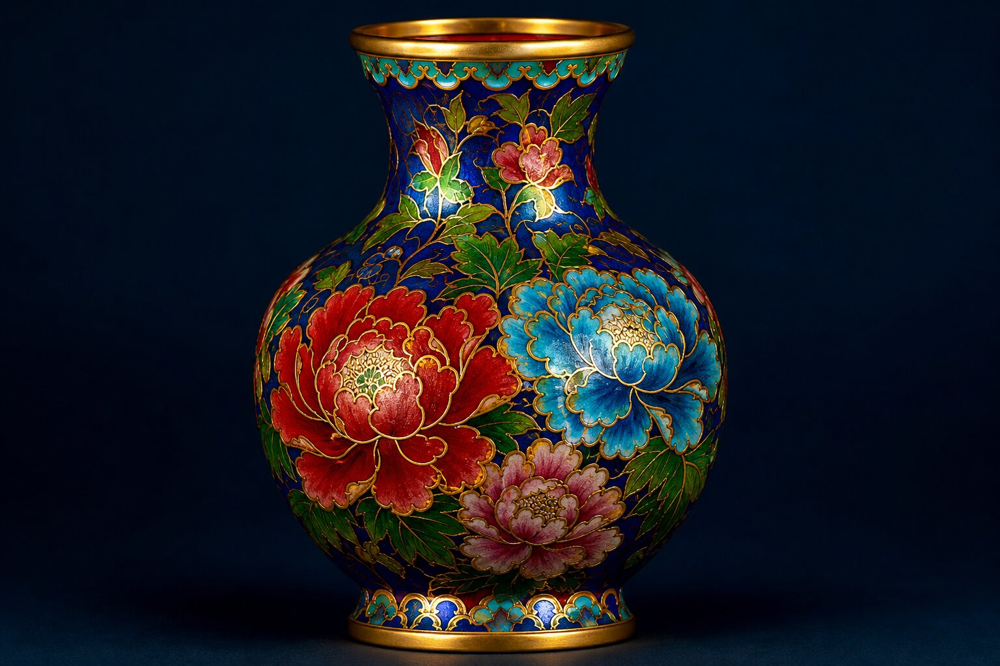

许多非遗并不缺知名度，缺的是理解与参与。
景泰蓝作为承载中式美学与外交文化的本土非遗，拥有深厚的地域传承脉络，却长期少有人深入了解其真实发展现状。为全面摸清三河景泰蓝技艺的传承现状、现存发展难题，探寻非遗活态发展可行路径，我们开展本次田野调查。
匠人普遍老龄化，顶尖老手艺人数量稀少；技艺学习周期久、劳作辛苦，学徒收入低、福利差，年轻人入行意愿低。传统师徒模式式微，高校人才培养重理论轻实践，后备人才供给不足。
优质珐琅釉料依靠进口，原材料逐年涨价；多次入窑烧制报废率高，能耗与物料损耗大。纯手工制作耗时久，无法规模化生产，小微工坊利润微薄。
机器低价仿品大量充斥市场，拉低手工景泰蓝整体价值；产品以传统大件摆件为主，日用文创品类匮乏，设计不符合当代审美。从业者多为小作坊模式，缺少品牌运营能力，原创设计抄袭泛滥。
烧制火候、釉料配比等核心经验依靠口传心授，缺少文字影像存档，技艺易失传；部分商家简化核心工序，正统工艺标准被弱化。大众仅知晓其国礼身份，对工艺内涵了解甚少，年轻群体认知度偏低。
小型工坊资金周转压力大，专项扶持资金多向大厂、名家倾斜，民间作坊支持力度不够。行业缺少匠人、文创设计师、市场运营复合型人才，技艺转化与市场推广衔接断裂。
烧制、镀金工序存在污染物排放，环保管控收紧；城区经营场地租金高昂，老旧作坊设备安放受限，不少小作坊被迫停业。
查阅景泰蓝工艺资料、行业报告及非遗文献，梳理技艺特点与行业问题，为调研提供理论依据。
走访非遗工坊、文创展厅，实地考察景泰蓝生产工艺、传承现状与经营难题。
整合文献与实地调研内容，分类梳理行业现存问题，汇总得出调研结论。
「畿辅文薪·匠心永续」数字化调研实践团
指导教师：赵鹏凯
调研时间：2026年7月16日至19日
调研地点：河北省廊坊市三河市
点一点位，看看能去哪、能体验什么。
地图加载失败时，仍可点击下方点位查看详情与导航。
点击地图标记或下方条目，查看详情与导航
工序见匠心，一器载山河
点上方工序，加载对应短视频（弱网更稳）
景泰蓝，中国的著名特种金属工艺品类之一，到明代景泰年间这种工艺技术制作达到了最巅峰，制作出的工艺品最为精美而著名，故后人称这种金属器为 “景泰蓝”。景泰蓝正名 “铜胎掐丝珐琅”，俗名 “珐蓝”，又称 “嵌珐琅”，是一种在铜质的胎型上，用柔软的扁铜丝，掐成各种花纹焊上，然后把珐琅质的色釉填充在花纹内烧制而成的器物。因其在明朝景泰年间盛行，制作技艺比较成熟，使用的珐琅釉多以蓝色为主，故而得名 “景泰蓝”。
全流程以纯手工为主，机器仅辅助基础裁切，核心纹样、填色、烧制全靠匠人经验把控。
景泰蓝制作第一步即为制胎，采用延展性好的紫铜板材，依照设计造型，经裁剪、捶打、拼接、焊接成型，反复修正器型弧度，最终锻造出规整铜胎基底。
将扁平黄铜丝依照画稿纹样弯折、掐出造型，蘸白芨胶固定粘贴于铜胎表面，所有图案轮廓全部由手工掐丝勾勒完成，是景泰蓝线条美感的核心工序。
以天然矿物研磨成各色釉料，用吸蓝管填入掐丝形成的凹槽内，分遍填色、干湿分层，保证色彩饱满均匀，一件器物需反复点填多遍。
填完釉料的铜胎送入高温熔炉煅烧，釉料遇热熔固，冷却后釉面会凹陷，因此点蓝、烧蓝工序需要反复循环 4-8 次，直至釉面与铜丝齐平。
多道烧制完成后，先用粗砂石、细砂石打磨，再用木炭、水磨反复抛光，磨平釉料与铜丝高低差，让器身顺滑光亮，显露完整花纹。
打磨完成的半成品放入镀金槽，通过电解镀金工艺，在外露铜丝表面镀上纯金，隔绝氧化，同时让器物拥有华贵金属光泽，是成品收尾关键工序。
用手指沿虚线走一圈，感受线条如何成为纹样。
选择花纹
先选一种花纹，再按住拖动描线
解锁：掐丝是景泰蓝线条美感的核心——每一根铜丝，都是手工弯折固定。
选掐丝纹样与釉色，再点纹格——先湿后干，釉面带凹感高光。
选择掐丝纹样
当前釉色：宝蓝
先选釉色，再点纹格：第一次为湿釉，再点同色或稍候变干
解锁：点蓝需分遍填色，干湿分层差一分就可能串色。
拖动滑块设定窑温（区间刻度见下），点「入窑烧制」后才揭晓釉色效果。
入窑烧制后才见釉色
800℃
调节火候，点「入窑烧制」后才揭晓釉色
解锁：点蓝与烧蓝要循环多遍，火候全凭经验。
拖拽或点选，把 6 道工序排回正确顺序。
按住条目拖动排序；或点两项交换位置
解锁：制胎→掐丝→点蓝→烧蓝→磨光→镀金，缺一步都难成器。
看细节线索，判断手工还是机器仿品（模拟识物，非真 AR）。

左右拖动竖线对比两侧；按住画面约 0.2 秒可局部放大丝线与釉面。
但深度参与仍然不易。
景泰蓝为国家级非遗，完整留存 108 道纯手工古法工序，制胎、掐丝、点蓝、烧蓝、镀金等核心环节高度依赖匠人经验，机械化无法完全替代。三河毗邻北京，清末便有大量本地工匠赴京学艺，技艺传承根基深厚。当下珑珐琅作为廊坊市级非遗传承单位，严守燕京八绝正统工艺，对标外交国礼制作标准，技艺传承体系完整规范。
亲身参与掐丝、点蓝实操后发现大众体验存在三大问题：一是工艺门槛高，新手极易出现铜丝变形、脱丝、釉料串色等失误，成品合格率低；二是完整工序耗时极长，短时体验只能完成局部步骤，无法体会全套工艺复杂度；三是体验偏重动手操作，缺少景泰蓝历史、国礼文化、本土渊源的配套讲解，普遍存在重实操、轻文化的问题。
一是学艺周期长、劳作枯燥辛苦，年轻人入行意愿低，匠人老龄化、人才断层风险突出；二是古法手工制作成本高昂，市面低价机器仿品泛滥，严重冲击正统非遗产品，大众对其工艺价值认知不足；三是技艺传播面较窄，多数人仅知晓景泰蓝名称，对繁复工序与文化内涵了解甚少。
景泰蓝既是传统手工技艺，也是承载中式美学与大国外交礼仪的文化瑰宝。三河珑珐琅在坚守古法的基础上开展工艺创新、承接国礼创作，实现了非遗活态传承。但传统手工艺传承阻力依旧较大，后续需通过规范研学课程、加大文化普及、推进年轻化创新等方式，让景泰蓝非遗技艺长久焕发生命力。
工序可以展示，深度参与仍然不易。
青年如何从新观众，变成真正的参与者？
不是空泛口号，而是来自田野证据的行动方向。
针对技艺口传心授、经验易失传问题，拍摄掐丝、烧蓝、镀金等全流程影像，整理釉料、烧制标准形成标准化档案。明确手工景泰蓝与机器仿品区分标准，规范市场；开放工坊工艺观摩，可视化展示古法价值。
采用「师徒传承 + 院校合作」模式，进校园开设非遗课程、组织工坊研学。推行阶梯式模块化教学，降低学艺入门难度；设立学徒津贴、作品展销渠道，改善从业待遇，留住青年从业者，搭建稳定传承队伍。
坚守核心手工工艺，划分三级产品线：高端国礼收藏重器、中端日用茶器首饰、入门平面景泰蓝文创。依托本地平面珐琅专利，联动文旅、国潮品牌跨界开发，打破景泰蓝只有大型摆件的固有认知。
围绕《和平尊》《喜凤瓶》等经典国礼举办专题展览，讲好景泰蓝外交文化故事。联动影视、游戏、新媒体跨界宣传，用年轻化形式吸引青年，提升本土品牌格调，摆脱低端纪念品标签。
线上用短视频、直播科普工序与真假工艺区别；线下开展研学、亲子体验、校园巡展，变单向参观为沉浸式学习。普及手工景泰蓝价值，改善低价仿品冲击行业的现状。
打造「生产 + 展览 + 研学 + 文创」一体化文旅路线，联动周边文旅资源开发研学打卡点。推进产学研合作，完善原创纹样、器型知识产权保护；争取政策扶持，投入人才培育、数字化存档、设备升级，为非遗长效发展提供支撑。
逛工序、动手、答题、看国礼——盖满印章，带走一张护照海报。
掐丝匠人
最难的不是弯，是弯得刚好贴住胎型。
点卡片翻转看「看得见 / 看不见」；长按（按住）可透视胎体→铜丝→釉层。
基于田野发现的轻量思辨，没有标准对错。
完成对应行为即可盖章（本机保存）。
报告、纪录片、H5，共同讲述同一个问题。
· 调研报告 1 份（约 4300 字）
· 微纪录片 1 部（1 分 20 秒）
· H5 数字档案 1 套（正式交付 · 互动增强）
看完档案后，选出最打动你的一点（本机记录，可反复切换）
你对燕郊非遗最深的印象是什么？
留言保存在本机浏览器，适合团队互评；跨设备请在 config.js 配置问卷星。
掐丝点蓝 · 国礼纪念
景泰蓝田野印章册内页，可保存带走